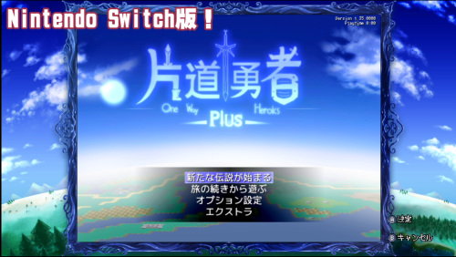

■2020-06-20 (土) ウディタ作品のゲーム機移植の話▼
エスカドラ様とPLAYISM様のお力によって、
なんと『片道勇者プラス』がNintendo Switchで発売されました！
というのが前回のお話でした。

移植に関するエスカドラ様へのインタビュー記事も出ました（↓）ので、
特にウディタユーザの方で気になる方はぜひご覧ください！
具体的にどうやってウディタ作品をNintendo Switch上で動かしているのか説明されています。
【「家庭用ゲーム機へ移植不可能」とされた
『片道勇者』がNintendo Switchデビュー。
難しすぎる移植はいかにして実現されたのか？】
https://automaton-media.com/devlog/interview/20200617-127872/
(見られない場合のｱｰｶｲﾌﾞﾍﾟｰｼﾞ)
リンク先記事のざっくりとした内容としては、
●ウディタの基本プログラムをUnityのネイティブプラグインにしてUnity上で動かした。
自分をWindowsのゲームだと思い込んでいるソースコードが
Nintendo SwitchのUnity内でそうとは知らずに走っている。
（このやり方でちゃんとなめらかに動かせてるのが一番ヤバい！
将来的に考えれば効率的な方法ではあるものの、普通こういうやり方したら動作がものすごく遅くなって
結局「その作品1本だけの」移植をした方が楽という話になりやすいので、
「ウディタまるごと移植」はむしろスーパー技術者にしかできないシンプルな力業です）
●移植の話は考えたことはありましたが、私には技術的に困難だと見込んでいました。
また、外部からの移植案件も実は来ていて、ご協力させていただいたのもあるのですが、
うまくいったという連絡は今のところありませんでした。
●エスカドラ様によると、『今後はウディタ作品の移植は短い時間で可能』とのこと！
様々なチューンや審査が必要なので一瞬で完了するということはないけど、
ウディタ作品からコンソールゲームがリリースされるのを惜しみなく協力していきます！
だそうです！
（そして記事の最後に株式会社エスカドラ様のお問い合わせページへのリンクが貼ってある。
カモーンウディタリアーン！）
という感じでした。
今回は上記記事の補足みたいな形で、
「別ハードへの移植」という課題についてなぜこれまで移植が実現しなかったか、
私個人の話をさせていただこうと思います。
【自分で別ハードへの移植はできなかったのか？】
株式会社エスカドラ様のおかげで別ハード移植が実現した今だからこそ言えることですが、
自分で移植しなかった（できなかった）理由もありました。
家庭用ゲーム機移植はどういう点が難しいのか？
まずおおざっぱに、別ハードへの移植には
以下の3つのレベルの「課題」があると考えています。
【レベル1 移植先のハードへリリースする『権利』を得られるか？】
そもそも私みたいな個人開発者の場合、
「家庭用ゲーム機などに移植する『権利』を得られるか」がまず問題でした。
これまでは個人だと、交渉しても「えー会社にしてから言ってよ」って
言われちゃうケースが多かったですからね。
ですがこれに関しては、ここ4年くらいで急激にハードルが下がってきた部分で、
ヘタすると「企業」という形を取っていなくても、
一部のゲーム機に出せる可能性が出てきている部分だと感じています。
（でも完全な個人でNintendo Swtichなどに出しておられるかたって
いらっしゃるのかな？ 私も詳しくは存じません）
仮に、家庭用ゲーム機では個人で出すのがまだ大変だとしても、
少なくとも「スマートフォン」側のアプリ公開・販売に関しては
だいぶ前から個人に対してほぼ自由化されているので、すぐ出すことが可能です。
なのでこれまで一番高かった「そもそも移植の権利を得られるの？」というハードルは、
今ではだいぶ低くなってきていると考えています。
ところが、その先を乗り越えた場所にも大きな課題がありました。
【レベル2 移植先のハードで『期待通りの挙動』をさせられるか？】
ここからが技術的な課題です。
まず技術的に第一の関門である、
「そもそも移植先のハードで『期待通りの挙動』をさせられるところまで行けるか？」
というのが、けっこう大きな問題です。
とはいえ、私の開発ツールは『WOLF RPGエディター』であり、
プログラムのソースコード自体は全部持っているので
本当だったらわりかし簡単にできてもおかしくない部分です。本当だったら！！
ソースコードがひどすぎて、そのままだと動かないとこいっぱいすぎて
やっぱりすごい大変でしょうけど！
エスカドラ様のほうでも、私の爆弾入りうんこコードのせいで
大変なことになっていたと思います。
たとえば私が作ったウディタの実行部分は、ゲーム内処理を高速化させるために
どうやら本来の用途から外れているやり方で危険な処理を組んでいたらしく、
コンパイラのバージョンが変わっただけで微妙に挙動が変わるといった
見つけにくい問題が起きたりして大変なご迷惑をおかけしてしまいました。
ただそんな私みたいな「パソコン坊主＋α」のレベルでも、時間さえかければ、
いつかはゲーム機上で元とほぼ同じ挙動になるまで仕上げられるかもしれません。
ここは最低限の技術力やセンス、学習力さえあれば、あとは「根気」の問題だけで、
「実現できる可能性がまだある」部分だと考えています。
最大の問題は次でした。
【レベル3 移植先のハードで『期待通りの速度で』動作するか？】
このレベル3、「期待通りの『速度』で動作するか？」というのが
あまりにも重すぎる課題で、正直、
私の能力では手に負えないと考えていた部分でした。
「ウディタ作品（や『片道勇者』）をスマホやゲーム機で出せるようにしないんですか！？」
とたまにご要望をいただきますが、ウディタの処理を普通にスマートフォンで動かしたら
「いちおう動くけど毎秒5～10フレームしか出ない！ ここから3～6倍も速くしなきゃいけないの！？」
みたいなことになるのは、程度の差はあれほぼ確実です。
（通常、ゲームは毎秒30回更新や60回更新で動作させることが多いので、
5～10フレームだと目標の8％～33％分しか速度が出ていないことになります）
そして私は、こういった最適化技術に関してはやっぱり「パソコン坊主」レベルなのです。
仮に組んでみて5～10フレームしか出ない状態から、
なんとかして30フレーム出せるところまでいけるかというと、
それはもう「プログラム技術のうまさとセンスがどれだけあるか」かつ、
「スマートフォンやゲーム機での最適化にどれだけ熟知しているか」
という問題になってくるわけで、私にとって初めてのスマホアプリ開発や
ゲーム機での開発でそれが達成できるとはとても思えません。
この「速度の問題」をクリアするための技術は、何年もその機種で作り続けてようやく、
「最初からこういう構造で作っていけば速く動かせるぞ」
と理解できるようになってくるもののはずです。
なので私がいま移植プロジェクトを立ち上げたとしたら、その結末は
「何とか『元と同じ挙動』をするものは作れる」ものの、
「速度面の品質がダメすぎて何もリリースできない」
という形で終わるパターンが最も有力ではないかと考えていました。
（もちろんそれ以前、レベル2の『挙動の再現』すら達せない可能性もあるでしょう）
そしてまた、移植会社さまが一番すごかったのが、
「ここを期待以上にやりこなせる非常に高い技術力をお持ちだった」ということです。
このレベル3をどうにかできる力があるならば、実際どんなやり方だってどうにでもできるんですよ！
でも一方で、できなければ一切成果にならない。このレベル3はそんな課題なのです。
【それで、スモーキングウルフの能力としては？】
私の別機種への移植のハードルは前述のように考えていて、
このうちの「レベル3」を突破できる見込みが私にはありませんでした。
「でもウディタ作れたじゃん！」って？
実はウディタそのものは、
「Rubyでなんとか動く自作ゲーム（シルエットノート）を作れるスキル」の人間が、
「初めてのWindowsプログラミングでも時間をかければ作れてしまう」程度には、
「やる気さえあったらいつかは作れる」ものだったんですよ！
つまり、ウディタ開発は今回でいう「レベル2 意図通りに処理が動く」までの
必要能力やセンスだけで実現できるものだったのです。
私は採算度外視で動けるケースもあるので、
ウディタ開発プロジェクト単体で見れば労力の面ではすごい大赤字でも、
採算さえ無視すれば実現可能性が高いプロジェクトだったわけです。
なので私のプログラミングスキルは完全なポンコツではないかもしれませんが、
だからといってレベル3に至る技術力があるかというと、
そこにはあまりにもほど遠いものでした。
ということで、結局何が難しい点だったかをまとめると、
【レベル3 期待通りの速度が出せるか】の課題が明らかに難しいのと、
【水準に達しなければ何も出せない】の2点が最大のネックだったのです。
特に、「品質次第では何も出せない可能性がある」というのが一番痛い！
仮に総合評価が50点くらいにしかならないゲームであっても、
リリースできる状況なら、完成すれば私は必ずリリースすると思います。
しかし今回のような「移植プロジェクト」は、評価が50点だとリリースすらできません。
「毎秒10フレームしか出ないゲームでも出していいよ！」という
家庭用ゲーム機の会社さんは今どきいらっしゃらないでしょうし、
プレイヤーの方も遊びたくないでしょう。
「ゲームの移植」という仕事が私のいつもの仕事とは違うのは、まさにその部分だったのです。
「経験値を得るための時間」を大量に費やしてもいいのなら
時間をかけて自分で試すこともできるのですが、
4年くらい前に事故で口座残高が2桁になってしまったので、
「時間をかけても何も出せないかもしれない」ハイリスクなお仕事に挑むのは、
ますます難しくなる一方でした。
そしてまた、そんなところに移植のチャンスが舞い込んできたので、
本当に関係者の皆さまには、頭が地面に埋まるほど感謝したい状況だったわけです。
【最後に 移植会社さんの技術も勇気も凄かった】
『ゲームの移植』というのは、たとえちょっと処理が不安定でカクカクであろうと、
「なんとかリリースできる」だけでも実はかなりの能力があるはずなのに、
周りからは「それじゃ不十分だ、もっと完璧に仕事をこなして当たり前」
と思われがちな、過酷なお仕事です。
そしてこれは私の想像ですが、要求される技術力に達することができず、
「リリース基準を満たせずに消えてしまった移植プロジェクト」というのも、
ウディタ移植に限らず、実は裏で結構あるのではないでしょうか。
そんな「ゲーム移植」という仕事の難しさにも関わらずに果敢に挑戦してくださった
株式会社エスカドラの皆さまの勇気と、移植を実現してくださった
その高い技術力に、私は心から敬意を払いたいと思います。
このたびはウディタ作品の移植を手がけてくださって、本当にありがとうございました。
そんなわけで、関係者の皆さまの血と汗の結晶である
『片道勇者プラス』、Nintendo Switch版はただいま好評発売中です！
↓
【ニンテンドーeショップ 『片道勇者プラス』販売ページ】
￥1,500
ただスイッチ版だと字が小さいので、それが気になる方にはPC版の方がおすすめみたいです。
（特にSwitch Liteだと小さすぎて厳しいというお声も！）
一方で、快適性はヘタにパソコンでやるより速い人もいらっしゃるらしいので、そこはご安心ください！
チャンスがあれば、またフリカツのとき(ニコニコ動画)みたく
プレイ動画などを作ってご紹介したいと考えています。
2020-06-20 (土)  カテゴリ: ウディタ
カテゴリ: ウディタ
 カテゴリ: ウディタ
カテゴリ: ウディタ